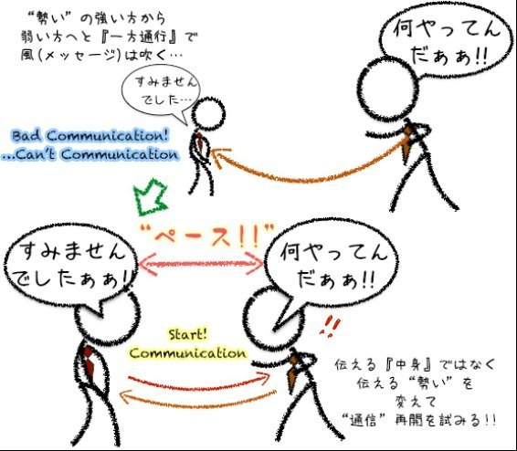
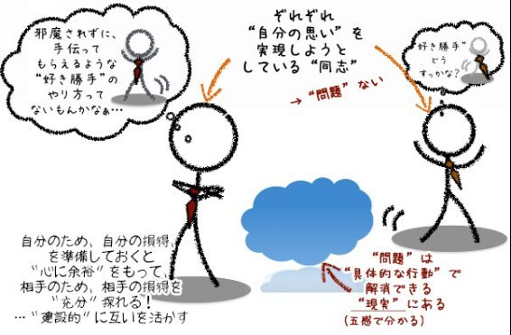

| "わがまま"な"あの人"との付き合い方 −仕事篇− わがままに生きるためのＮＬＰ講座 | |
| 稗島正樹 | |
| Team-Awakeners (2016) | |
"わがまま"に生きるためのＮＬＰ講 座 2
"わがまま"な"あの人"との付き合い 方- 仕事 篇 -
苦手な相手とどう付き合い、どう活かすか〜嫌いな上司と苦手な部下
コミュニケーションとは、互いにペースを合わせ、互いをリードし合うこと
◇エクササイ ズ s-3 . 「今の不満」を「未来の結果」から取り組み課題に変換する
◇エクササイ ズ s-4 . あなたの「結果と意見」の交渉のポイントを探る
◇エクササイ ズ s-5-2 . 相手との「建設的な」場をつくるためのアイ・メッセージ例
（本書は 、 201 5年 1 2 月 読者特典 "自分"のことしか考えない相手との付き合い方・活かし 方( 仕事 篇) PD F 版としてリリースされたものに加筆修正し書籍化しました。）
ＩＴ技術がどんなに発達しても、私たちはスマホやネットの世界に生きているわけではありません。いうまでもなく、誰とも関わらずに"ひとり"で生きるというのは事実上難しい。どんなに人にも、好き嫌い、得手、不得手がありますから、どこかのタイミングで"あの人とは合わない"や"あの人はなんてわがままなんだ"と思う相手に遭遇してしまいます。そして、それが一緒に仕事をする相手になったり、関わる相手になったりするのは、大げさにいえば、古今東西あったことですし、これからも起こりうることです。
私自身は"合わない"と思っていた相手と、よくよく話してみると、却（かえ）って気が合う友人になれたり、"わがまま"だと思った相手に率直に話をしてみると、「分からなくもない」事情や理由を聞けたりした経験があります。そのような経験から、どんな相手にも"話"をして見ないと分からないものだと実感してきました。
「愛の反対は憎しみではなく、無関心である」という言葉があります（マザーテレサの言葉とも、作家のエリ・ヴィーゼルの言葉ともいわれています）
私たちが"わがままなあの人"に対して "合わない"と思ったり、"なんてわがままなんだ"と思ったりしているということは、少なくとも、相手の「存在」を（心地は良くないけれど）認めているということ。関係は（望ましくない状態ではあるけれど）繋がっているということです。すると、課題は「望ましい」距離感、関係にどのように"調整／チューニング"するかというものに、注力することができるのではないでしょうか。日本の諺に「立っている者は親でも使え」というように、ここぞというときは、目上であっても遠慮なく協力してもらうことこそが、現実の世界をより良く（場合によっては楽しく）生きるためのポイントだとも思います。本書が、そんな仕事上の"あの人"とのより良い付き合い方のヒントとして、お役に立てると幸いです。
２０１６年 3 月 稗島正樹
この度は、「"わがまま"に生きるためのＮＬＰ講座 (Kindl
e版)
」
http://www.amazon.co.jp/dp/B0173DNXJQ/
をお読みいただきありがとうございます。
この本は、私自身がかつてそうであった、なかなか"わがまま"を言おうにも言えずに、「がまんをしている（いた）」方、あの頃の自分へも書き送ったものと言ってもいいかもしれません。今、その私自身が"わがまま"に生きるために築（気づ）いて、実践してきたアイディアです。
これまでの色々な方との出会いと学びの中で、自分が自分の想いの通りに"生きる"やり方を、あるときは先輩からの学び、あるときは自分で編み出し、あるとき は NL P のアイディアを、駆使しながら実現してきたように思います。
私たちは、実際の所、"人と人との繋がり"...家族、組織、社会の中で生きています。ですから、自分が"わがまま"に生きるには、だれかの"わがまま"とどう折り合うか、あるいは、なんとかして共存、共立するかの必要があります。平たくいうと「その場面で、"上手いことわがままに生きる"には、具体的に、どうすればいいかがないと困るんだよね」ということです。
この別冊では、「"わがまま"に生きるためのＮＬＰ講座」でお伝えしたことを踏まえて、少し、視点を変えてお伝えできればと思って書きました。
お読みになったのち、「こういう状況や場合にはどうすれば良いんだ？」と疑問や、好奇心をお持ちになったときには、特別ページ
http://www.team-awakeners.com/wagamama/
からのご質問、お待ちしております。
究極的にいえば、私たちは自分のしたいことしかしていません。「嫌々やってるんですよ！！」というときでさえ、私たちは「これ"しか"ない」と思って、自分で"選んで"いるんです...何らかの基準で。
子供の頃、"親に叱られたくない"という一心で、ウソをついて言い訳をしたことがあります。当然子どもですから、そのウソは、大人の思考には太刀打ちできません。傍から見れば、ムダなあがきです。しかし、当の本人は必死に"叱られまい"とウソをつくのです。・・・前回もそれ（ウソをついて）でこっぴどく叱られたのに・・・。
もちろん前回、こっぴどく叱られていますから、「ウソをつかない」、正直に謝ることが良策だと気づいるはずなのです。しかし、親から"叱られる"という心理的な圧力を受けて、 "そこから逃げ切る"という結果を得ようとウソをついてしまう。してしまった行動が、「あとで後悔しちゃうかも」と思う行動であっても、そこには、あなたにその行動を選択させる、"得たい何らかの結果"があり、それがあなたの行動を決めさせているのです。
そして、子どもの頃の私が"叱られない"という結果を得ようと、必死に選んだ"ウソをつく"という行動は、思いに反して、"こっぴどく叱られる"という結果になったわけです。
そんな心の深いところの動きに気づく由もない子どもの頃の私は、傍から見れば、「何でそんなことするんだ」と言われるような行動、"叱られない"ために "ウソをつく"という行動を"したいこと"として選んだわけです。"叱られないこと"の方がずっと 「ウソをつかない」ことよりも大事だと思えたから。子供の頃を思い出すと、こんな苦い経験ありませんか？
私たちが、社会や人の中で生きていくというのは、たくさんの"基準"の中で生きているということができます。あなたが、誰かに"わがまま"だなぁと感じるということは、単にその人の行動や振る舞いが、あなたにとっての"わがまま"の基準を超えていたということに過ぎません。その行動をしている本人は、あなたが「わがままな人だ」と評価を下すかもしれないかどうかを気にすることなしに、それをしたかっただけのことなのです。もちろんその本人はどこまで深く考えていたかは別として、相手には相手のその行動に対する理由があり、たまたまそれがあなたの、"他人に対してわがままを感じる基準"を超えたということです。
さぁ、それでは、ここで質問です。
「その相手は"わがまま"だったのでしょうか？」
もちろん、相手がそれをするのを決めるのは相手の自由ですし、あなたが、その行動を"わがまま"と評価するのもあなたの自由です。
前作『 "わがまま"に生きるためのＮＬＰ講座』では、その"わがまま"上で起こる衝突に対応して、互いに"思いのまま"に生きるやり方を提案しました。
友人関係、あるいは仕事関係、ときには家族関係の中で、「なんであの人は、自分のことしか考えないのだろうか」と文句の一つもつけたくなったことありませんか？・・・個人的には「特別なことではない！！」そう思います。
私の家でときどき起こることに置き換えてみます。
通常、自宅で仕事をする事が多いのですが、たまに、必要があって、朝から出かようとしているとき、特に、電車の時間に間に合うか間に合わないかで焦っているときに、奥さんからちょっと話しかけられます。加えて、二匹の猫たちが"かまって欲しい"と寄ってくる。そんなとき、私自身は「なんでこんな急いでいるときに！！こっちの状況も考えろ」と胸の中で悪態をつきます。直接バトルをしている"ひま"もありませんから。ただ、自分の中だけで、"まったくもう（怒）！"と勝手に怒りをため込む。
さて、どちらが"自分のことしか考えてない"のでしょうね。
一歩、離れて考えてみれば、猫たちの動機が一番シンプルです。
そのとき"かまって欲しかったから"という"純粋な"動機で寄ってきます。
もし仮に、自分に余裕があるときであれば、その仕草は、怒るどころか、うれしい。文字通り「猫かわいがり」するでしょう。・・・なんて自分勝手な自分。
うちの奥さんにしても、忙しそうにしているのは分かっているけれど、出かける前にどうしても確認したいことがあって、やむを得ず声をかけたのですから、後で冷静に考えれば、"自分のことしか考えてない"わけではない。
むしろ、"自分のことしか考えられていなかった"のは、自分の方だったのかもしれません。
そもそも、自分がもう少し早く準備を始めていれば「電車に、間に合うかどうかの瀬戸際」などと焦る状況にいなくて良いはずなのですから。
普通に生活をしていても、相手のことを考える余裕がなくなることはあるものです。そのときに、ついつい「相手がこちらのことを考えるのが筋だ！」と考えてしまうと、思いとは反対に、物事はあなたの思い通りに進まなくなります。
なぜなら、物事を好転させる"鍵"が、相手の変化待ちになってしまうのですから・・・相手が"自分のことしか考えない"から、"こちらのことも気遣う"へ考えを"改める"のを待つことに・・・。
それだったら、自分が変った方が手っ取り早いということになりませんか？
どのようにかというと、「相手がこちらのことを考えるのが筋だ！」から、「相手は"今"自分ことしか考えてられていないかもしれないんだ！」へ。そして、「どうすれば、相手にこちらのことを考えてもらえるように働きかけられるんだ？」と自分の"わがまま"実現へ、自分自身で舵を切る自分への問いを投げかけてみませんか？
サラリーマン時代、ある上司に、「サラリーマンが持っている人事的なカード（≒権利・権限）は、退職届を出すことだけだ。」と言われたことがあります。
採用の可否、部署の配属はもちろん、上司も後輩も部下の配置も、会社側が決める事。自分の一存で決められることではありません。すると、好むと好まざるとに関わらず、"嫌いな"上司の下で働くことは起こり得ますし、"苦手な"部下あるいは、後輩がつくことも起こります。
・・・人事はまさに"（他）人事（ひとごと）"会社側は容赦ありません。
それで、もしこれを「リスクだ」と決めつけてしまうと、サラリーマン人生はそれこそ大変なことだらけになってしまいます。
かくいう私自身、今現在、サラリーマンではありません。私の場合は「嫌いな上司や苦手な部下」がいたから会社を辞めたのではありませんが、それでも、自分の価値観とは違う価値観を押しつけようとしてくる"苦手"な上司とどう関わるかという問題はありました。上司にかなりにモノを申す部下でしたから、もしかすると上司にとっては"嫌"な部下だったのかもしれません。
このエピソードの一つを「"わがまま"に生きるためのＮＬＰ講座（以下「ＮＬＰ講座」）」で書きましたが、上司が、私の価値観（現場の邪魔になるだけで、相手のためにならないことはしたくない）にあわない命令を出したときには、遠慮なく自分の意見を伝え、相手の見解を説明してもらうことで、納得まではしなくても、相手の言い分、立場を理解して、互いの着地点を見つけるという手順を踏んでいました。
もちろん、あの当時の私は、まだまだ、上司への物言いに雑さがありました。きっと、上司が言いたい放題に、言わせてくれていたのかもしれません。しかし、この経験で学んだ大切なことは、互いの言い分を表に出すことの効用。それを知ったことです。
断るための議論や主張ではなく、自分の意見、相手（この場合は上司）の考えを聞いて、「"今"ここでの最適な選択肢」が何かを話し合える（関係性をつくる）経験をしたことがこの後の人生（サラリーマンもその後も）役に立ちました。
ここ（価値観や意見の相違）に、感情的な「好き、嫌い」を持ち込むと話は進みません。
「嫌い」な相手だからといって、それを理由に、相手の意見や論理的な説明を受け入れないことは、あなた自身の"仕事の仕方"として、将来、役に立つモノとは思えません。あなたやあなたの仕事のための資源である、社内の"ある意見"を廃棄する、あなたのとりうる選択肢や可能性、創造性を失うことに繋がると思うからです。
この価値観や意見の相違の場面、それらが合わない、あるいは合わせてくれないあなたにとっての"苦手"な部下だったらどうでしょうか？
多くの場合、部下を持つというのは、あなたも含めて、部下を持つその人が、その仕事において優秀であったからのはずです。ですから、ときに自分と比べて部下や後輩があなたの思うように行動してくれないことにもどかしさを覚えるでしょう。
ここであなたの自身の心の動きを振り返ってみて下さい。
部下に指示を出す。自分は自分なりのやり方（あなたの"黄金"パターンかもしれませんね）があります。しかし、部下は、あなたの思ったようには動いてくれない。結果の品質、クオリティには責任がある。でも、時間をか（賭）ける余力があるわけではないのに...・
こんな状況で、もどかしさやある種の焦りを覚えたことはありませんか？
当然、自分の想定していたことと、違う行動をされれば、いつもと違う段取りが必要になることだってあるでしょう。そのリカバリーをどうするか？ なんてことも、「自分がやってれば...」と思いたくなることもあったかもしれません。
その"思い"の渦中にいれば、仮に、相手の方が優れた部分があったとしても、あなたが、現在動いている仕事のプロセスと結果に責任を持つ管理職であるからこそ、あなたの考えている道筋で、あなたの思った結果に辿り着くこと以外のプロセスを、"困ったモノだ"と感じてしまうことがあっても不思議ではありません。
自分の仕事や結果に、責任を感じていればいるほどです。
そしてもちろん、あなたは自分の仕事をしながら、さらに部下、後輩の面倒を見るための充分な時間があるわけではないでしょう。ですから、その"勝手な行動をする部下や後輩"が"苦手"に思えたり、ときには"使えない"とさえ感じてしまっているのではないでしょうか？
これもまた、もったいない話。どこかのタイミングで、あなた自身と部下との認識のズレを整えるための話をする時間を持つことは役に立ちます。
あなたにとって、そんな時間が取れない中でもその時間をもつことは有益です。
なぜなら、このちょっとした認識のズレは、相手に対する"苦手さ"や"嫌いだ"という"感情"に変換されてしまうからです。
その結果"仕事"というどちらかといえば論理的な舞台にいるにもかかわらず、論理が通らない舞台で仕事をしなければならないようにしてしまっていたとしたら、随分、仕事も仕事上の人間関係もやりにくいモノになるに違いありません。
「人間は感情の動物」といいます。全ての人間関係が論理的に解決するわけではありません。私たちはすべて、論理（理屈）と感情とを持っていますし、その両方が仕事や人間関係を上手く回してくれているのも事実です。
私たちが人間関係、とくに、仕事の人間関係において、うまくいかないときには、これらの論理と感情のどちらかを無視したり、偏って使っていたりしていたことに気づけたとしたらどうでしょう。
・・・このズレに気づいて論理と感情とのバランス整えれば良い、ということになります。
そして、整えるためのズレに気づくための第一歩には、結局"嫌いな"あるいは"苦手な"相手と話すこと。ここから始める事が一番の近道になるのです。
「嫌いな上司、苦手な部下、っていうのは、自分勝手で"わがまま"な存在だからね」。そう感じれば感じるほど、できれば"関わりたくない..."なんて思ってしまうかもしれません。苦手なモノにわざわざ近づく必要はないという考えもあります。
しかしながら、その"嫌い"、"苦手"の根拠となっている、相手の"自分勝手"さ、"わがまま"さについて考えてみると、そもそも、人は、究極的には"自分のしたいこと"をする"わがまま"な存在だということ。
単に、上司や部下がその人のしたいようにしていることが、あなたの感情に"嫌いな気持ち"、"苦手さ"を生じさせているのです。...いかがでしょう？
そして、もしかすると、あなたが自分自身の"わがまま"をその上司、その部下に表現し切れていない、あるいは、相手がそれを理解して（酌んで）くれない。だから、なおさら、その伝わらなさ、もどかしさで"嫌いな気持ち"、"苦手さ"が増幅されている。いかがでしょ う ?
「地図は"土地（領土）"ではない」・・・これは、前作「"わがまま"に生きるためのＮＬＰ講座」でもお伝えしているＮＬＰの前提です。私たちは、「仮に、同じ出来事を同時に体験していたとしても、それぞれ異なったものとして経験する」、それぞれの人がそれぞれ、違った物事の捉え方、理解の仕方をするということを示したものです。
"喰わず嫌い"もその一つの例になるでしょう。
６年前の私にとっては、文章を書くことがそれでした。定期的にブログを書く、この文章を含めて、本を書く、あるいは、ＮＬＰやコミュニケーションのトレーニングのテキストを書く。どれ一つとっても、"文章を書く" こと。それは全て"嫌いで苦手なもの"、"アンタッチャブルなもの"でした。私と"文章を書く"との関係は最悪。まさに"近づいてはならないもの"がそこにありました。しかし、今となっては、文章を書くこととは良い関係になっています。なにしろ、ほぼ毎日、ブログやメルマガに何かしらの文章を投稿しているのですから。かなり付き合いは長く、深くなってきています。その結果、"文章を書くこと"と分かり合えた・・・感覚的にはそういう感じなのですが、自分の中に文章を"楽"に"楽しく"書けるという感覚が手に入ったのです。
もちろん、筆が進まず唸るときもありますが、少なくとも、相手を嫌うのではなく、自然な感じで向き合っているというのが、今、私と"文章を書く"との関係です。
人間関係、人と人との関係が、私と"文章を書く"との関係と１００％、同じ、相似形になるわけではないでしょうが、相手と関わり、相手を知る、そして、意見を交わし合える関係にまで、距離を縮めていくステップをこの例の中に見つけたいのです。
人は、だれでも、自分の意見や発した言葉を否定される事や、無視されることに少なからず抵抗を覚えます。これは、無意識的なことですが、日本語に言霊（ことだま）という表現があるように、私たちは自分の意見、発した言葉を自分の分身のように感じるのです。ですから、相手の話を否定したり、聞かなかったり（聞く耳を持たなかったり）すると、話し手は、心理的な抵抗感を覚え、だんだんと話したくなくなっていきます。
・・・これまでの経験で思い当たることはありませんでしたか？
実は、嫌いな上司、苦手な部下との最初のボタンの掛け違えは、この互いの話をどちらかが否定した、あるいは、聞かなかった事から始まっていることがほとんどです。
そこで、コミュニケーションを整えるためのエクササイズを用意しました。
誰かと話をするときに、相手の話を"聞く"ために、次のａ）、ｂ）、ｃ）のいずれかを意識してみてください。（慣れてきたら、ひとつずつ増やして、最終的にはａ）、ｂ）、ｃ）の全てを意識できるとさらに効果的です。）
ａ）相手の話すスピードやリズムを捉えて聞く。
（相手の呼吸や身体の動き（のリズム）に相づちや頷きを合わせることが役立ちます。）
ｂ）相手が話すことについて理解する。相手に自分が理解したことを伝え返して、自分の理解が正しいか確認する。
（相手の話をそのまま返す、あるいは、要約して伝えた後、「この理解でいい（ですか？）」と確認することで、あなたの"聞く"の質が高まります。）
ｃ）自分の伝えたいことは、相手の話が一段落してから伝える。
（相手の話について、一段落つけてもらうためには、相手の意見について、否定をするのではなく、意見として存在することを認めることが役に立ちます 。( 「例」そういう風に考えていたんだ ね) など。）
コミュニケーションにも、いろいろな形態があります。その中でもし、あなたが、相手との関係において、少なくとも"苦手"な状態、"嫌い"な状態を脱したいと思う。あるいは「好きにまでなるのは無理でも、まぁ、仕事では障りにならない、可能ならば協力できたら・・・」と考える。それらの状況での、コミュニケーションの基本姿勢は「互いに相手の話を聞くこと」になります。そもそも、コミュニケーションのゴールは、相手との対立を深めることではありません。
相手の話を聞こうとしても、話しづらいとか、対話になりにくいと感じる時には、必ずと言って良いほど「相手が聞く耳を持たないのが悪いのだ！・・・話を聞かないアイツが悪い！」という思いはよぎるもの。しかし、残念ながら、いえ、幸運なことに、コミュニケーションの結果は、どちらか片方のみの責任があるのではありません。双方の責任、五分と五分です。ですから、その結果を変え始めるためには、先にどちらかがやり方を変えること。つまり、あなたが率先して、関係を変えることが可能だということです。
あなたが、相手からのコミュニケーションを尊重する姿勢を示す、相手の話すスピードやリズムに合わせる （ Ex.s-1. a ）、相手の話したことへの理解を確認する （ Ex.s-1. b ）、相手の話を遮らない （ Ex.s-1. c ）のように、あなた自身のコミュニケーションの仕方を変え始めると、自ずと、その姿勢の変化に合わせるがごとく、相手の反応も変化し始めるはずです。
そして、安心して下さい。仮に､相手の意見が、あなたに取って受け容れがたいものであったとしても、話を理解する（受け取る）ことと、あなたがその意見に同意することとは、別のことです。相手の話を遮らずに聞いた後、あなたは、あなたの意見として、「その意見は理解しましたが、その意見には、必ずしも賛同しません」と表明することができます。それは伝えて良いことです。
・・・「また、そんなに上手くいくかよ！」という、ツッコミがあるかもしれませんが、互いが「自分の主張」を持つことは、だれも否定することはできません。ですから、ただ、相手が相手の意見を持って主張すること、そして、自分が自分の意見を主張することを、相手の意見に"敬意"を持ちながらやりとりをすればいいだけのことです。
このことにもし、相手の方が腹を立てるとしたら「自分の意見を伝えること」をし終えたら、感謝を伝えて、コミュニケーションを終えるのもいいでしょう。
一旦離れて、相手の反応を待ってみましょう。感情について対応する必要があるときには、コミュニケーションを止める（いわゆる冷却させる）方が役に立ちますから。
ここまででは、"嫌い"、"苦手"な相手と"コミュニケーション"を繋げることを中心にお話ししてきました。自分が相手に持っている"嫌いな気持ち""苦手さ"を整えて、違いを理解する事ができれ ば O K です。そして、それぞれがそれぞれの"自分の意見"を持っていていい。という感覚がご自身に手に入れば、前半部分でお伝えしたかったことは充分受け取って頂けているのではないでしょうか。
「相手が"自分"のことしか考えないこと」そのものは、実をいうとそれ程の問題ではありません。なぜなら、もしあなたが、１００％相手をサポートするために動いていたとします。そのときには、相手が"自分"のことしか考えないとしても、あなたその考えを実現すべくお手伝いするのですから、相手のことを"わがまま"だの、"自分勝手"だのとは思わないはずです。
相手が"自分"のことしか考えないことが問題になってしまうのは、相手の"自分勝手"が、あなたの"自分"のためにしたいことの障害になるからに他なりません。心の中に占める割合の大小はあれ、それぞれの人が、"自分"のことを考えます。互いの自分のしたいことが、少なくともどちらか一方に、好ましくない影響があることに気づかないままでいるから、"自分のことだけ"が問題になるのです。
そのことに気づいたとき、あなたは、"自分"のことだけ考えて配慮を示さないことに、あなたの言うことや立場に理解を示さないことに"嫌いな気持ち"や"苦手さ"を覚えている、これが、相手を"嫌う"、"苦手に思う"の種火になっているのです。
これを"何が起こっているのだろう"という視点で考えると、あなたの困り事は、相手の中に「あなたの"こと"について、処理する（考える、配慮する）余白がなかった」ということができます。言い換えれば、相手が考えたり、配慮したりする材料として検討するための「あなたの"こと"」が相手に届いていなかった、あるいは、相手にとって価値あるものだとは認めてもらえていなかったということは出来ないでしょうか。
結局それが、あなたにとって
「相手が"自分"のことしか考えない」
「相手はこちらの言うことを聞かない」
という困り事として、表出していたということです。
すると、「こちらの"こと"」を相手の中の重要な議題に挙げてもらうということ。これが、相手との新しいコミュニケーションを創る方針ということになるでしょう。
子供の頃の口げんか、
A ：「ば〜か」
B ：「"ばか"って言う方が"ばか"なんですぅ」
A ：「"ばか"って言う方が"ばか"なんですぅって言う方が"ばか"なんですぅ」・・・
こんな言い合い...放っておけば、永遠に続きかねないようなやりとりを聞いたり、当事者としてしたり...したことありませんか？
上のＡ、Ｂとも、互いに相手の言葉に反応して、会話（？...単なる言い合い）が進んでいきます。そして、互いにいいかげん言い合うことに疲れて、どちらかが「もういい！」と、ケンカ別れで終わるか、「そろそろやめようよ！」と仲直りの方向にまとめるか、いずれにしてもどちらかが、「言い合いに疲れた」ことで、会話の方向性を変えることで、会話を完結に向けていきます。
互い"同じように"言い合い疲れていることが、この会話を終局に"一緒に"向けていくことになります。どちらの方向に変わるにしても...。
この例の場合は、"同じように疲れる"という形で、相手との"ペース"が合いました。この例は、お気づきの通り、必ずしも"疲れた"ことが、会話の方向、関係性に影響を与えたのではありません。相手と"同じように"なったことが重要な要素だったのです。
「"コミュニケーション"の結果は、互いで創り出すものである」
というのが、コミュニケーションの基本の性質です。これを頭の片隅に置いておくと、会話は、これまで以上に、あなたが思った方向に進めやすくなります。
私たちは、会話の内容以上に、互いに、安心して話せるかどうか、話し易いかどうかによって、会話を進める（会話に深入りする）かどうかを決めています。
当然のことながら、私たちの日常会話には、台本などは存在しません。いうまでもなく"アドリブ・即興"の世界です。相手が何を話してくるのかは"予測"できない、"未知"との遭遇です。私たちの脳は、"未知"なものに対して警戒するようにできています。ですから、"未知"である会話が進めるためには、警戒すべき部分を減らしたいのです。
そこで、話の中身以外のところに対して、"安心"や"話し易さ"が求められると考えられるのです。それが、相手と"同じ感じを持つ（共感する）"こと。コミュニケーションの用語では、"ラポール"と呼びます。ラポールの状態では、相手と話し易い"場"が成り立っています。そこでは、何らかの形で、相手と"同じ"要素があること、この認識が互いに持てているのです。
"同じ"について、例えていえば、話の内容が、対立、激論であったとしても、互いが"激論"の応酬し合う中で、その語気が"同じ"合いはじめ、そこでの議論は深まっていきます。必ずしも、話の中身が相手に沿ってなくても、コミュニケーションは良好に進む（展開する、深まる）のです。"語気"が同じという関係を土台にして、互いの発言が、相手の発言に、影響を与える状況がそこにはできあがっていたのです。
コミュニケーションが良好に進む"状態"を、必要な場面で再現するための具体的な行動は、〔相手と会話のペースを合わせる〕、〔相手の話し方のリズムを掴む〕ことです。これが、具体的にあなたが相手（都のコミュニケーション）に影響を与える行動です。この新しい伝え方を利用して、あなたは、相手に対して、あなたの伝えたいこと、影響を与えたい内容・メッセージを伝えることができます。そこから、会話の方向を変化させて互いの思いを伝えていくのです。
次に、日常会話で相手の話にペースを合わせながら、どのようにこちらのペースに"招待"するかについてのエクササイズを挙げてみます。
a ) 相手から話しかけられたときに、 相手が伝えてくれたことに、相づち（例えば、「うん」、「そうだね」、「そう」、「そうかぁ」など）を４〜５回した 後で、あなたの話したいことを「それでさ...」から続けて話してみてください。
b ) 相手との会話の中で、 互いに"当たり前"に分かること（例えば、会話の文脈で、共通で知っていること、相手が話してくれたこと、今ここで互いがきづいているであろうこと など）をいくつか話した 後に、あなたの話したいことを「それでさ...」から続けて話してみてください。
※ａ）、ｂ）、のどちらの分も、下線部分が"ペース（を合わせること）"になり、その後が"リード（変化に導く）"になります。いずれの文例も、互いに共通な話をしている、共通認識を持っているというところを伝えることで、"安心"、"話し易さ"がある会話の場を作っています。

コミュニケーションの進め方として、"ペース＆リード"−相手に合わせて、変化に導く−をお伝えしました。その中で、"ペース"を実現する方法は、相手の話し方のスピードやリズムを合わせるだけではありません。
相手が"自分のことだけ"を考えて話して"いらっしゃる"ならば、あなたも"自分のことだけ"で考えたことを伝えれば、話の方向性で互いに"ペース"が取れることになります。"わがまま"と思われてしまうような相手に、いつまでも"わがまま"のレッテルを貼っておく必要はないのです。あなたが、"自分のことだけ考えた意見"をその相手に伝えれば、そこには、"一方的なわがまま"が通る場面ではなくなります。
そこで、互いの"想い"がぶつかって、まとめる方向に進めるのか、今回は別々に進めるのか、あるいは、二人の"想い"を、含んだ（元々の考えを超えた）ものを創るのかという、次の展開に進めることができます。
どちらかが、不満を持つのではなく、互いに"わがまま"を言い合えるとしたら、それは、"本音を言える間柄"をいうこと。その関係は、 これ以降の建設的なコミュニケーションの土台として活かせるはずなのです。
相手が"自分のこと"を言うことをあなたが認めるために、あなたも"自分のこと"を言うことができれば、そこに"コミュニケーション"が成立するのです。
ここでもし、あなたが「あいつの言うことは"だけ"は聞きたくない」というような感覚がある時には、自分自身で自分に対して「相手の言うことを聞きたくないのは、どうしてなんだろう」、あるいは「相手の言うことを聞かないことで、手に入れたいものはなんなんだろう」と確認してみてください。
ここに、明確な答えがない場合は、もしかすると、あなた自身の内側に"感情的"な動機があって（だけで）、不満、フラストレーションをためている可能性があります。
お気づきのとおり感情は、理屈で解消しようとしても上手くいきません。
あなたがもし、その抑えがたい感情が抑えたいと思ったときに対応するための、２つの選択肢を提案します。
私たちが覚える不満の感情は、未来への建設的な発想に至る前に、現在の"原因"に意識を向けさせ始めます。その結果、目の前の"不快感の解消"のみにあなたの時間と力を消耗させてしまう可能性があります。そこで、"不満"の感情にとらわれすぎることなく、互いにとっての"望む結果"が何かを再点検するために、"未来に予測される結果"を捉えることで不満を課題に変換します。
ア）その感情が収まるのを待つ（気分転換できれ ば O K です）。収まった後で相手の"意見...実現したい具体的な結果"に対してどう感じているか確認して、相手の意見に従うかどうかを決める。（ 相手の望む現実的な未来を確認する ）
イ）その感情を抑える事で、あなたが失ったり、困ったりする"具体的な影響"は何かを（箇条書きで）書き出してみる。書き出したあと、そのリストをみてあなたが本当に困ることを上位３つ書き出す。（ あなたの避けたい具体的な未来を確認する ）
会話のどちらか一方、あるいは双方の心の状態が整っていない時には、"建設的"な会話や議論にはなりにくいものです。相手の心の状態を、無理矢理に変えることは難しいですが、その相手の心の状態がどうであれ、あなたが自分自身を根気よく粘り強く
「"建設的"な会話をしよう」
という心の状態にすることができるはずです。その第一歩として、あなたが会話する相手とあなた自身との関係に横たわっていた"不満"が、あなたにとってどういう存在だったのかを確認してみましょう。これが、あなたがあなたの"わがまま"を伝える準備の最初の一歩になるはずです。
もし、この世界に"制約"がなかったら、全ての人が"自分のことだけ"考えて、"わがまま"に何でもすることができます。その場合には、そもそも"わがまま"なんていう概念も不必要です。
つまり"制約"というアイディアが、あなたに誰かを"わがままだ"と評価させたり、誰かから"わがままだ"と思われることを怖れさせているのです。
既に「ＮＬＰ講座」でお伝えしているように、相手の"わがまま"も、あなたの"わがまま"もあなたの中にある判断です。まずは、一旦"わがまま"かどうかという判断は、脇に置き、"あなた自身のこと"、あなたが手に入れたい結果、あるいはあなたの伝えたい意見のことだけを考えればいいのです。
そもそも、どんな意見を伝えても、相手は何かしらの反応をします。
「何、言ってるんだ、バカヤロ ー! 」
と言われる場合もあれば、
「なんだ、そんな事で良いのか？」
と言われる場合もあります。
さらには、何も言われず「スルー」だってあり得るのですから。
仮に、あなたが、「あなたが手に入れたい結果、あるいはあなたの伝えたい意見」を"わがままに"考えたとしても、それだけでは何も起こりません。安心して自分のこと"だけ"を考えてみてください。
それ以上に、ここであなたが"あなたのこと"を親身に考えておかないと、相手の反応次第では、あなたが懸念する、「相手は言っても聞いてくれない」に陥りかねません。あなたは、自分がどうしても伝えたい、伝わるまで何度も伝えたいと思えるほど"あなたのこと"について考えておけばいいのです。
ここからは少し、相手とどんな風に折り合えるかという、"現実的"な話を進めていきましょう。多くの場合"自分のことしか考えない人"との話は、交渉的な要素を含みます。あなたが"自分のことしか考えない"と思う相手は、そのとき、自分にとっての"得"、"メリット"を最大限主張していると捉えることができます。初めの段階で、あなたが「なんてわがままなんだ」と感じているときは、相手のあなたとの"得"の主張割合は、１０対０、良くて８対２と言ったところでしょうか。第一印象として、かなり"攻め込まれているな"感じているかもしれません。そんなときこそ、少しあなたの「手に入れたい結果、あなたの伝えたい意見」について、考えてみましょう。
相手との会話の中で、意識して（確認して）おきたい要素があります。
「手に入れたい結果、あなたの伝えたい意見」で、あなたにとって、
(A ) 譲れるところはと譲れないところはどこか？
(B ) かけがえのない大きな損と無視できる小さな損は何か？
(C ) 相手の得たいものの中心はなにか？
(D ) あなたが得たいものの中心はなにか？
(E ) 仮に、「相手の言うまま」にさせたときに、あなたが得られるものは何か？
これらのアイディアは、「釈迦に説法」なものかもしれませんが、"交渉"のコミュニケーションにおいては、相手の意見を受け容れることの、デメリットだけではなく、メリット、利点も確認しておくというは、頭の片隅に置いておきたいアイディアです。
あなたは、相手と互いの"自分勝手／わがまま"を実現するためのやり方を作っているのですから、協力が不可欠です。そのときに、相手からもらうばかりでは、協力できるものもできなくなります。ですから、それぞれが、少なくともあなたが納得する要素、あるいは許せる要素を予め見つけておいて、相手に対しての、交渉のカード、協力を引き出すカードとして使いたいのです。
交渉の中においても私たちは「人間は"感情"の動物である」を遺憾なく発揮します。私たちは"感情"にとらわれてしまったとき、相手に対して、"好き／嫌い"、"得意／苦手"の評価軸に入ってしまったときには、ついつい、相手と自分との共有ゾーンを探ることを忘れがちになります。
そのときに、"損得勘定"をしておくということが思った以上の効果を発揮します。
ちょっと考えてみると、スマートなやり方に思えない。人によっては「損得勘定なんていやらしい」なんて感じをお持ちになるかもしれませんが、客観的、第三者的な視点を持って交渉を進めるときの、心強い味方になってくれます。
さて、その"損得勘定"の結果を、どのように活かすか・・・私は相手と互いに有意義な結果を導くために使う事ができたら、スマートで素晴らしい味方になってくれるはずです。
ここまで扱ってきた「"自分のことしか考えない"相手とどう付き合い、どう活かすか」という関係を、別の捉え方をすると、
「 互いに"得たいものがある"同士 」なのだ
ということがはできるはずなのです。
それがたまたま−少なくともあなたにとって−互いの"意見"を妨げているというのが、「"自分のことしか考えない"相手」との付き合い方に困っている状態となのです。
そして、前半でお伝えしたように、人は、自分の意見や発した言葉を否定される事や、無視されることに無意識的に抵抗感を覚えます。ですから、自分の意見を妨げているからといって、相手のことを互いに「あいつが悪い」と非難し合うことは、余り有益ではありません。単に、互いの抵抗感が増し、結果として敵対する結果に繋がります。わざわざ障壁を育てるようなものです。
ですから、この本では、相手と繋がる、協力できる関係をつくるステップをたどってきました。起こっている状況や現象を捉えて、相手を非難することは容易なのですが、それでは解決の糸口となる根本にはたどり着きません。たどり着かないどころか、その問題状況の登場人物である相手は、あなたの味方ではなく、"敵"にまわって邪魔をしてしまうでしょう。
もしかするとあなたは、これまで、相手をいつまで経っても、"自分のことしか考えない"ばかりか、加えて"あなたの事を邪魔しようと考える"難敵にしてしまっていたのかもしれません。
もちろん、あなたが"わがまま"を主張することが"悪"いのでもありません。
次のステップに必要なのは、新しい発想での関係づくり・・・そもそも、「だれかが、"悪い／悪くない"という評価をする」ことに意味はなく、かえって害悪になっているのだという発想を関係づくりの土台にすることです。

もしも、"自分のことしか考えない"相手も、あなた自身も互いが手に入れたい結果が、それぞれ、何の関連も影響もなく実現出来るのであれば、いいのですが、あなたがその相手に、心をあるいは、行動を乱されているとしたら、何かしらの手を打つ必要があります。それは、相手を協力者として味方に引き入れることです。そうでなくても、相手を妨害者とすることを避けたいのです。
そこで、まずは、相手に互いのゴールを手にいれる為の仲間として協力体制をつくるために、あなたの"自分勝手"だけれども伝えたい、その想いを伝えてみましょう。「ＮＬＰ講座」でお伝えした、"アイ・メッセージ"のアイディアが役に立ちます。それに先だって、"アイ・メッセージ"がどんなものであったかについて改めてお伝えします。
まだ、それほど親しくない人から、「私、謙虚じゃないですかぁ」と言われたとき、心の中では「知らんがな」とツッコミを入れたくなります。相手が「自分はこうだ」とか「私は、こう思っている」と言われたときには、「そうなんですね」としか言いようがありません。つまり、どんな人も相手が「感じていること、思っていること」については、反対のしようがありません。受け入れざるを得ないのです。「相手が受け入れてくれる」伝え方とは、「私は○○と思っている」「私は○○だとうれしい（を思う）」、私が私のことを伝える...これの伝え方を、 Ｉ（アイ＝私）メッセージ といいます。先程の「知らんがな」は「なんだか分からないけれど、あなたのいうとおりなんだよね？」という積極的ではない肯定（否定しないということ）を伝えています。相手にとっても「私」がそう思っていることに対して、「私」以外のだれもとやかく言うことはできません。Ｉ（私）メッセージが「私」の言うことを批判なく、相手に受けとらせることになったのです。
では、アイ・メッセージのエクササイズで「私の思っていることを伝えることで、相手が受けとりやすい（反論しにくい）表現」の方法を練習します。
...「"わがまま"に生きるためのＮＬＰ講座 」5 章より
■シンプルなアイ・メッセージ
〔A ．あなたがして欲しいこと〕＋〔Ｂ．あなたの感情や得られる結果〕
文例１）「私はあなたが、 私が"わがまま"に生きるのを見守ってくれる と うれしい です。」
＜メッセージで伝えること＞
Ａ：あなたが、「私が"わがまま"に生きる」のを見守る
Ｂ：私はうれしい。
＜メッセージで伝えること＞
Ａ：あなたが（私に）協力する
Ｂ：私は助かる
※〔Ｂ．あなたの感情や得られる結果〕で伝える、あなたの感情、あるいはあなたが得られる結果の例
・感情の例：うれしい かなしい つらい おちつく など
・結果の例：助かる 幸せだ 幸運だ 喜ぶ など
繰り返しになりますが、この"アイ・メッセージ"は、あなたがあなたの思うこと、感じることを素直に相手に伝える方法です。あなたが"こう感じた"、"こう思った"ことは、誰にも反対することも、否定することもできません。すなわち、反論の余地を小さくする伝え方です。
この伝え方で、注意すべき点は、あなたが伝える思うこと、感じることの中に、相手に対する"評価"を入れてしまうことです。例えば、
「私は、あなたが、"わがまま"に生きるのをそっと見守ってくれると 良い と思います。」
と伝えてしまうと、暗に相手の今の状況「"わがまま"に生きるのをそっと見守ってくれていない」状況を"良くない"と評価（非難）しているように伝わります。
"評価"というものは、人によって、あるいは立ち位置、視点、立場によっても変わるものですから、相手に反論の余地をたっぷり与えてしまいます。相手は、「それは、あなたの"勝手な"見解でしょ？」と、その意見を受け入れる必要性が小さくなってしまうのです。すると、相手は、あなたの意見を聞かずに、結果"自分のことだけ"を主張する結果になるでしょう。
"アイ・メッセージ"を使って、評価ではなく、あなたの気持ち、本心について、素直に伝えることが、相手のコミュニケーションの扉を開く方法になるのです。
〔あなたがして欲しいこと〕＋〔あなたの感情や得られる結果〕
相手・・・Ａさん、
相手の"自分のことしか考えてない"意見を聞いた後
「Ａさんの意見は「（Ａさんの話の要約など）」ということですね。それに協力するに当たって、私にもお伝えしたい意見があります。」
「Ａさんの手に入れたい結果の実現と同時に、私の手に入れたい結果は、『手に入る やり方を一緒に見つける ことができる』ことで、そうなると 嬉しい です。」
「 私は 、互いに協力できるのであれば、 喜んで協力したいと思って います。もし、賛同頂けないとしたら、私はあなたに喜んで協力することはできません。いかがでしょうか？」
〔解説〕
上の会話例は、想定問答の一つですが、ここでは、
１）相手との協力できる場をつくりたい。
２）そのために私の意見も聞いてほしい。
３）私はあなたに協力する想いがある。
４）私の意見も実現するように協力して欲しい。
５）あなたが"自分のことしか考えない"のであれば、進んで協力はしない。
ということを伝えた例です。その他にも様々に伝える内容や伝え方があると思思いますが、まずは一例として活用してみて下さい。
「あなたは、ここか ら" わがま ま" に生きるために生まれてき た 」という想いをベースに「"わがまま"に生きるためのＮＬＰ講座」を書きました。特に日常の"自分"が自分の"わがまま"について、どう対応するかを中心にまとめました。そして、２冊目となるこの本では、いわゆる"わがまま"な相手にどう対応するかについて活用頂ければとうれしく思います。
私たちは日常、対等な人間関係にだけいるわけではありません。上下関係やジャンケンのような三すくみの関係のように、コミュニケーションの技術を教科書的に使うだけでは対応しきれない場面で生きています。しかし、これは一般的に存在するコミュニケーションの技術が役立たないということではありません。ちょっとした、味付け、アレンジが必要だということなのです。
今回は、ＮＬＰという自分の状態を整え、世界の捉え方、相手への働きかけ方を言葉の使い方、五感の使い方からサポートする技術をベースに、コミュケーションの技術、そして、私自身の経験から、使っている方法のいくつかを提案としてお伝えしました。これが、例示したいくつかの状況において、そのまま活用したり、あなたがこれから遭遇するかもしれない、困った場面で使える、コミュニケーション方法の選択肢を増やしたりのするに役立つと考えています。
私たちが制約を感じる時、そこに不満を覚えます。そしてまた、その制約があなたにとっての"わがまま"否かを決めています。
あなたが引いた、"わがままか否か"の線引きそのものが、あなたにとっての"制約"として、あなたに不満を与えていたとしたら、どうでしょうか？
"自分のことしか考えない"上司も部下も、仲間も友人も、あなたがつくった"制約"の枠から解き放って、互いに"わがままに自由に生きる"ことを模索している同士として考えてみましょう。
そうすると、いかにして、自分の"わがまま"にとって、そして、相手の"わがまま"にとって、互いにその状況や、互いの"わがまま"を活かせるかという、新しい"協力関係"を探求する"価値"が生まれてきます。
ここに、あなたがあらゆる状況で"わがままに生きる"ヒントがある。そう思うのです。
今現在、それぞれの人が与えられている状況に、運／不運、恵まれている／恵まれていない、良い／悪いは、実際の所存在します。しかしながら、その状況について、あなたは、それをどのように活かすのか、あるいは、変えるのかについて、次の選択をすることができます。その選択をこれまでのように、"相手が..."、"状況が..."と言っているだけなら "わがままに生きる"どころか、"状況のわがまま"に付き合うことになってしまうのかもしれません。
あなたが、"わがまま"に生きるために、あなたは、どの状況に対しても、仮に逆境に対しても、それを活かしきる・・・あなたが、あなたの"わがまま"を押し通すためのやり方に、ＮＬＰを初めとして、この本でお伝えしたことなどを加えて頂きたいのです。
私は、本を通して、あるいは、ブログ や Faceboo k 、メルマガを通して、さらには、ＮＬＰのトレーニングやコーチングを通して、あなたの"今ここ"の世界があなたにとってリソース（資源）になる、そして、あなた自身がリソースを見いだすためのサポートをしています。
本書「"わがまま"な"あの人"との付き合い 方- 仕事 篇- 」が、あなたが"わがまま"に生きるための一助になっていたとしたら嬉しいです。
また、「"わがまま"な"あの人"との付き合い 方- 仕事 篇- 」、「"わがまま"に生きるためのＮＬＰ講座」をお読み頂いて、
「こんな場面ではどうしたら良いの？」
「この状況でどうやって"わがまま"を実現するの？」
など、さらなる活用の仕方について、知りたいなど、ご要望がありましたら、
■"わがまま"に生きるためのＮＬＰ講 座 kindle Boo k 連動ページ・質問フォーム
http://www.team-awakeners.com/wagamama/
よりお知らせ下さい。
そしてまた、私がお届けしている、ＮＬＰトレーニングやコーチングがあなたのリソースを見いだす力を手に入れるお役に立てると嬉しいです。
あなたは、プライベートはもちろん、仕事の場面でも、"わがまま"に生きるために生まれてきたのですから。
私たちの生きている現実には、確かに制約があります。
しかし、その制約の中にある"可能性"を１００％生かし切れているかと訪われたとしたらどうでしょうか？
ここが私たちが「"わがまま"に生きる」ための、自分への問いなのかもしれません。
社会人として、企業、組織の一員として加わるとき、そこにいる人は、必ずしも自分に合う人ばかりとは限りません。もちろん、自分が後見すべき「お客さん」もまた、自分に合う人ばかりではありません。
そして、これらの職場の面々、関わるお客さんとの関わりに関して、決定権は、自分にはありません。そんなときどうするか・・・。これが、この本でお伝えしたことを考え始めたスタートです。それは、今から 約 1 5 年前、社会人 も 1 0 年目になる頃のことでした。幸か不幸か、自分がそこで、どんな役割を果たし、どんな結果を出したいかを、自分で主張でき始めた頃に、苦手な上司と出会うことになったことがきっかけでした。もちろん、上司と部下ですから、指示、命令の権限は、上司にあります。そこで、自分自身が納得出来ないことについて、「責任を持って」互いに、仕事を進めようと思うと、どうしても意見を伝え、聞くことが必要です。また、お客さんとの関わりでも、相手はお金を支払う「スポンサー」ですから、大きな権限があります。しかし、そのお客さんの主張の全てを受け容れることが必ずしも「お客さんのためにならない」こともあります。この場合にも、「丁寧に」意見を伝え、聞くことが必要でした。
ちょっと恩着せがましい表現にはなりますが、相手が手に入れたい結果を、手に入れてもらうためには、自分の仕事がしやすくなることが必要です。そこで、決して、相手のためだけではなく、自分のために。自分ができるだけ「わがまま」に仕事をするために。そして、自分の行動の結果が、お客さんの、あるいは、会社の仲間の、ためになるようにするために、丁寧にコミュニケーションを取ることを心がけていたのです。
その頃に考えていたこと、感覚的にしていたことを、今回、ＮＬＰを初めとしたメンタルトレーニングやコミュニケーションの方法を伝えるようになって得た、知見やアイディアでまとめ直せた、というのが、昨年の秋、今回と書くことが出来たこれらの本です。
前作と同様に、この本もまた、上司とのやりとり、お客さんへの対応に苦戦していたあの頃の自分に伝えたかったことなのかもしれません。そんな、仕事に関わる"わがまま"な"あの人"との付き合う方法のあなたにとって使えるやり方のヒントになると幸いです。
２０１６年 ３月
コミュニケーション・イノベーター
ＮＬＰトレーナー
メタ・コーチ
稗島 正樹
■コーチング、コミュニケーションワークショップ
ひじままさきのＨＰ
■ＮＬＰトレーナーとしてトレーニングを提供しています。
ＮＬＰフィールドのＨＰ
■"わがまま"に生きるためのＮＬＰ講 座 kindle Boo k 連動ページ
http://www.team-awakeners.com/wagamama/
※ こ の H P では、コンテンツの更新情報、この書籍に連動したデータを提供致します。本文中のエクササイズのガイド音声、本文中の図のアップロード、質問用のフォームの設置を準備しています。
"わがまま"に生きるためのＮＬＰ講 座 2
"わがまま"な"あの人"との付き合い 方- 仕事 篇 -
201 5年 1 2月5 日 PD F 版 発行
201 6 年 3月 2 4 日 電子書籍版 初版発行
著者 稗島 正樹（ひじま まさき）
(C)2015,2016 Masaki Hijima